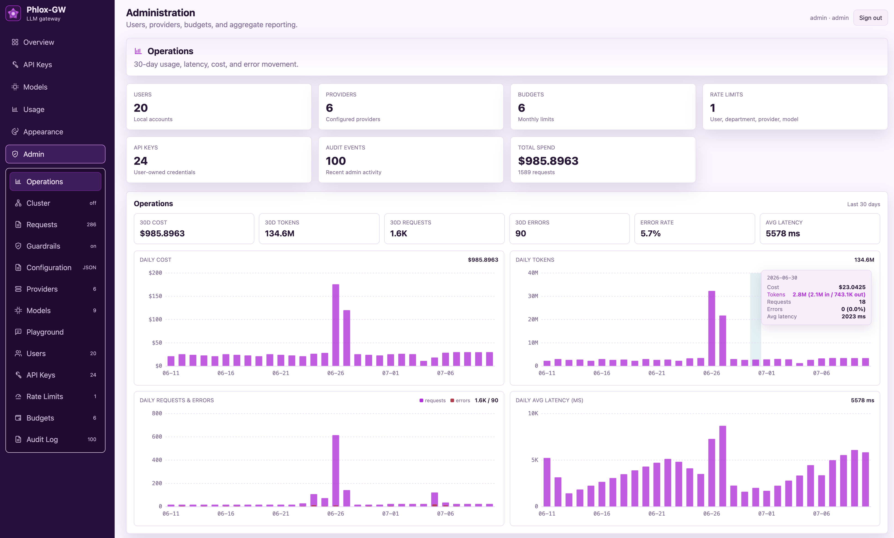
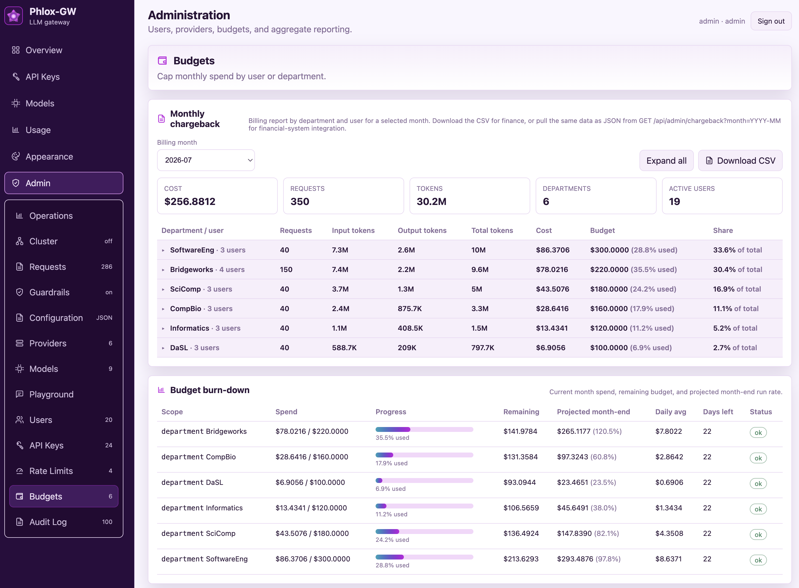
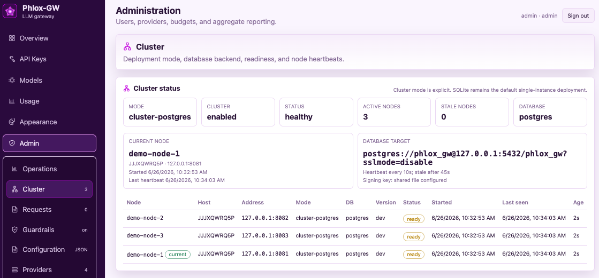
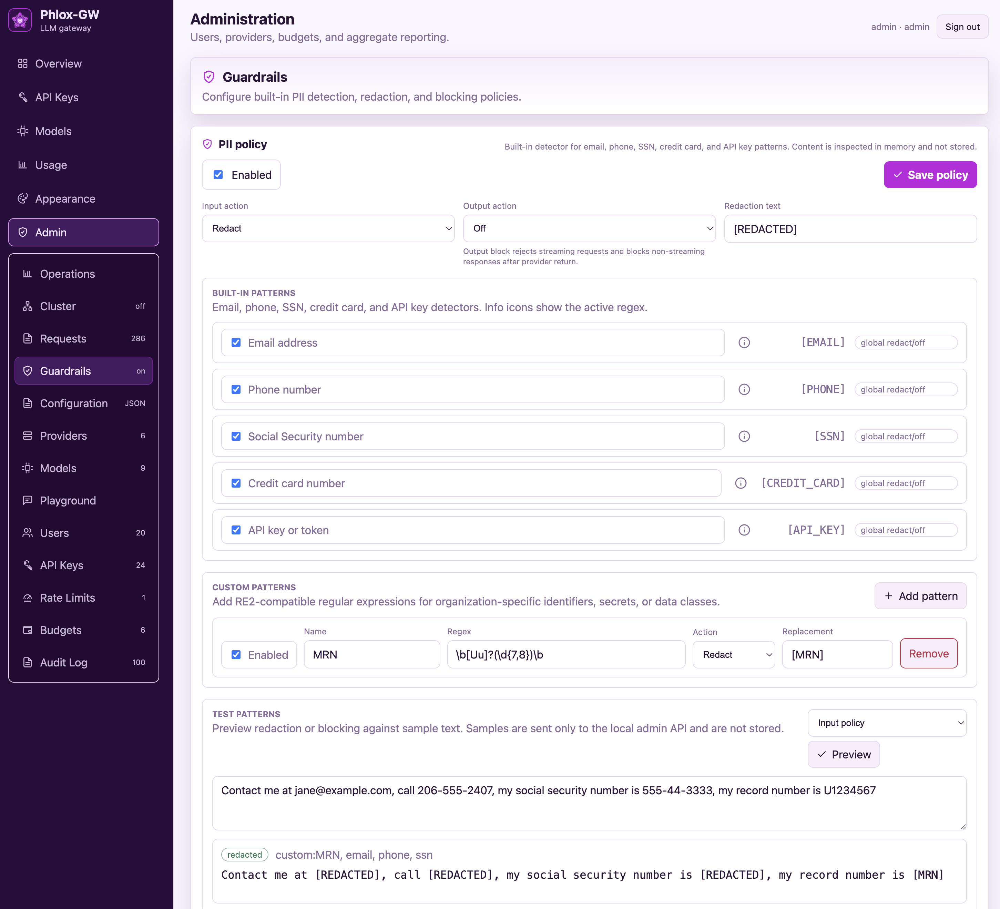
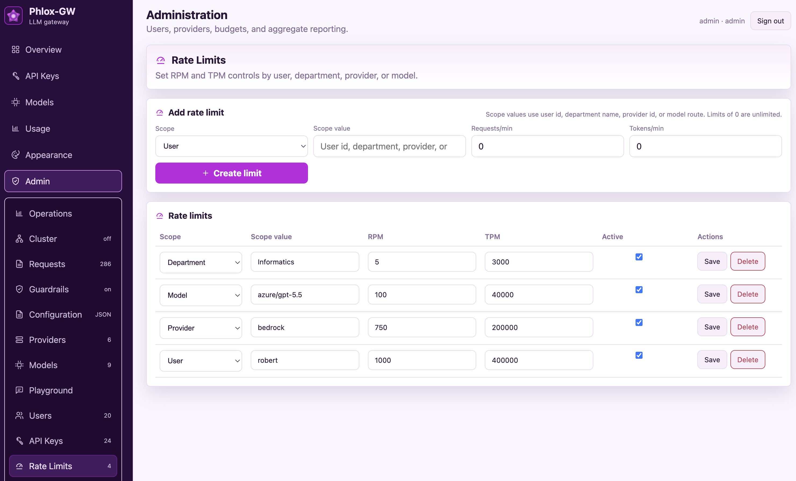
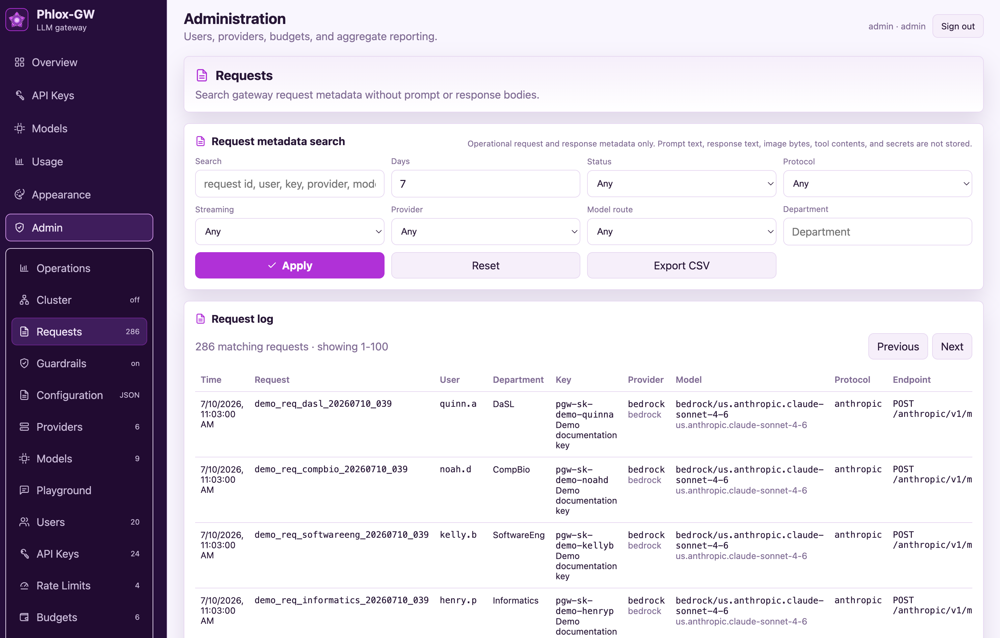
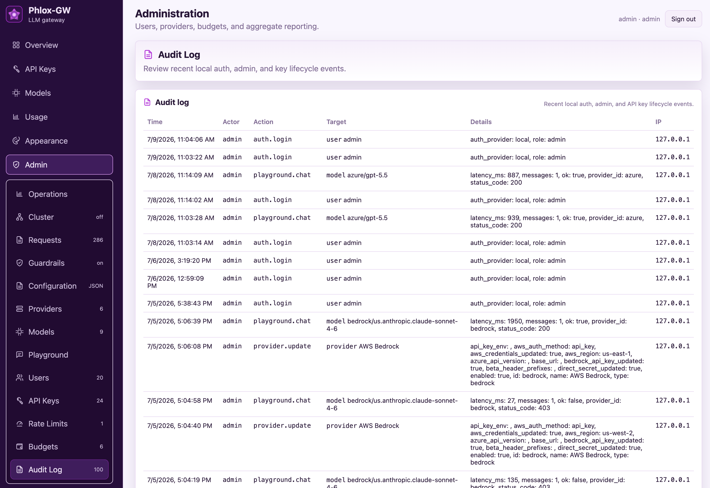
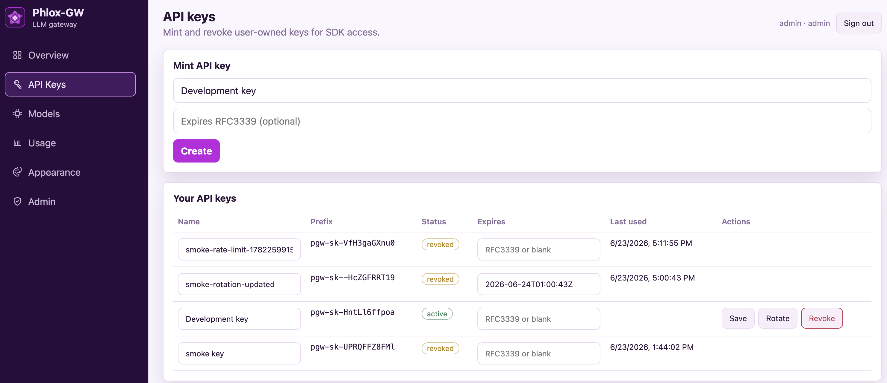

macOSStable
macOS
Native build for Apple silicon Macs.
Phlox-GW is a self-hosted gateway and governance layer between your users, apps, and every LLM provider — cloud or local. SSO, cost accounting, budget enforcement, guardrails, audit logs, and clustering — the features other gateways lock behind enterprise licenses are free here, forever.

The dashboard, API, and gateway are bundled together. No Go or Node.js runtime is required.
Native build for Apple silicon Macs.
Static binaries for common server and edge architectures.
Standalone executables for modern Windows systems.
Release security: verify the SHA-256 checksum before running a download. Binaries are not yet code-signed or notarized, so macOS Gatekeeper or Windows SmartScreen may ask you to confirm the application.
Most open-source LLM gateways publish the proxy and paywall the governance. The features an organization actually needs to run LLMs responsibly end up behind an enterprise license. Phlox-GW ships everything under Apache-2.0.
| Capability | Typical “open-source” gateways | Phlox-GW |
|---|---|---|
| SSO (Entra ID / OIDC) | Enterprise license | Free, built in |
| Audit logs | Enterprise license | Free, built in |
| Guardrails & PII redaction | Enterprise license | Free, built in |
| Prometheus metrics & OTel traces | Enterprise license | Free, built in |
| Clustering / HA | Enterprise license | Free, built in |
| Budgets & departmental chargeback | Enterprise license / SaaS tier | Free, built in |
| License | Open core + commercial | Apache-2.0, all of it |
This is a project principle, not a launch promo: every feature ships fully open source under Apache-2.0. Capabilities that comparable products gate behind enterprise licenses stay free here — permanently.
Publish model routes, control who can use them, attach prices, enforce budgets and rate limits, and report usage for chargeback — from one admin console.
Browser SSO with any OIDC identity provider. Auto-provisioning on first login, department claim mapping for chargeback, and group-based admin role mapping. Local accounts work too.
Per-user and per-department monthly chargeback from an append-only usage ledger, with per-model USD pricing per million tokens. CSV download for finance, JSON API for automation.
Monthly budgets per user, department, and API key with hard-limit enforcement — not just alerts. Burn-down views show spend, remaining budget, and projected month-end run rate.
RPM and TPM controls by user, department, provider, model, and API key. Blunt one noisy script without throttling the whole org.
Stable route aliases like chat/default, ordered fallbacks, retries, per-attempt timeouts, health-aware routing, and weighted traffic splits — swap providers without touching clients.
Detect emails, phone numbers, SSNs, credit cards, API keys, and custom regex patterns. Redact or block on input and output, with an admin preview tool for testing policies before saving.
Self-service key minting, rotation, and expiration. Admin key inventory with per-key model allowlists, budgets, and rate limits.
Operations dashboards for cost, tokens, requests, errors, and latency, plus Prometheus metrics and OpenTelemetry traces for your existing monitoring stack.
Every login, admin action, and API-key lifecycle event recorded with actor, target, details, and source IP.
Request metadata search and CSV export without storing prompt text, response bodies, image bytes, tool contents, or secrets — by default.
Send test chat messages through any model route to validate providers and models end to end — no API key required.
Ed25519-signed, sanitized configuration export for review, backup, and environment promotion — secrets and credentials never leave the box.
Every request lands in an append-only ledger with user, department, model, token counts, and cost. Finance gets a monthly chargeback report; admins get budgets that actually enforce.

Start with one process and SQLite — zero external dependencies. When one node isn’t enough, point multiple gateways at a shared Postgres behind a load balancer and keep going.
cluster-postgres with migration locking, node heartbeats, and readiness checks./health for liveness and /ready for database-and-heartbeat readiness.
OpenAI-protocol clients can call Claude on Bedrock. Anthropic-protocol clients — including Claude Code — can call GPT on Azure or a local model on Ollama. Streaming, tool calls, and images included.
| Client protocol ↓ / Provider → | OpenAI-compatible | Anthropic / Foundry | AWS Bedrock |
|---|---|---|---|
| /v1/chat/completions | pass-through | translated | translated |
| /anthropic/v1/messages | translated | pass-through | translated |
All six paths support streaming and non-streaming requests, with tool-call and image mapping, and usage capture for accurate cost accounting. Reasoning-model quirks (like max_completion_tokens and rejected sampling parameters) are detected and retried automatically, so old clients keep working with new models.
Point Claude Code at the gateway with one ANTHROPIC_BASE_URL — and route it to Claude, GPT, Bedrock, or a local model. Streaming and tool use are fully translated, and anthropic-beta headers are filtered per provider so strict endpoints like Azure AI Foundry don't reject requests.
Authenticate to AWS Bedrock with the SDK credential chain (SSO profiles, instance and task roles), stored access keys, or a Bedrock API key — per provider. No base URL to manage; just pick a region.
Any OpenAI or Anthropic SDK works by changing base_url and the API key. Model names are your stable route IDs, so swapping providers never touches application code.
Policy is enforced in the request path — not documented in a wiki and hoped for.
Built-in detectors for email addresses, phone numbers, SSNs, credit cards, and API keys — plus custom RE2 regex patterns for your organization’s identifiers (MRNs, employee IDs, internal tokens).

Set requests-per-minute and tokens-per-minute ceilings wherever they make sense: a user, a department, a provider, a model route, or an individual API key.




No Kubernetes, no sidecar fleet, no license key. One binary and a browser.
# Linux x86-64 example (SQLite by default) $ curl -fLO https://github.com/robert-mcdermott/phlox-gw/releases/latest/download/phlox-gw-linux-amd64 $ curl -fLO https://github.com/robert-mcdermott/phlox-gw/releases/latest/download/checksums.txt $ grep " phlox-gw-linux-amd64$" checksums.txt | sha256sum --check - $ chmod +x phlox-gw-linux-amd64 $ ./phlox-gw-linux-amd64 # → sign in at http://127.0.0.1:8080 # call it like OpenAI… $ curl http://127.0.0.1:8080/v1/chat/completions \ -H "Authorization: Bearer pgw-sk-your-key" \ -d '{"model":"chat/default","messages": [{"role":"user","content":"Hello"}]}' # …or like Anthropic — same gateway, same key $ curl http://127.0.0.1:8080/anthropic/v1/messages \ -H "x-api-key: pgw-sk-your-key" \ -H "anthropic-version: 2023-06-01" \ -d '{"model":"chat/default","max_tokens":256, "messages":[{"role":"user","content":"Hello"}]}'
Prebuilt for macOS, Linux, and Windows (amd64 & arm64). SQLite means zero infrastructure to start.
Point at OpenAI, Anthropic, Azure, Bedrock, Gemini, or your local Ollama/vLLM. Keys can live in env vars — stored secrets are write-only and never returned to the browser.
USD per million tokens per model, monthly caps per user/department/key, RPM & TPM limits at any scope.
Test every route from the admin UI before a single client connects — no API key needed.
Swap the base URL in any OpenAI or Anthropic SDK. Existing code keeps working; governance turns on.
Self-hosted, private by default, and free without fine print. If it’s in the product, it’s yours.